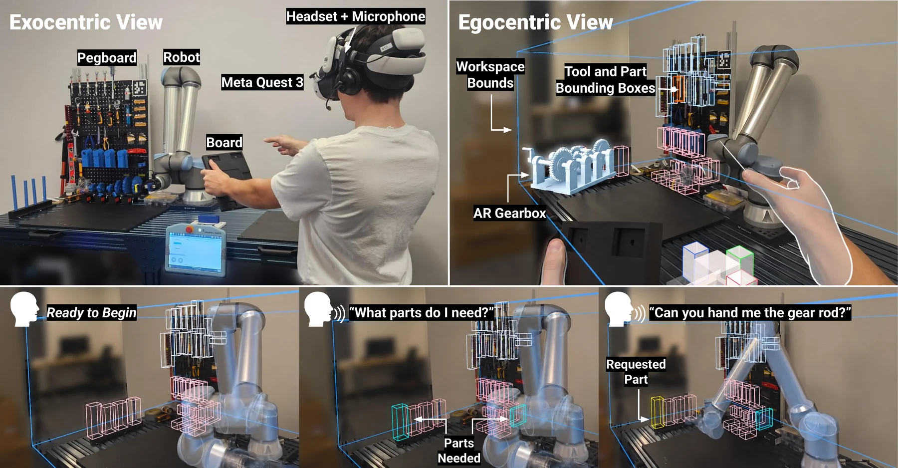
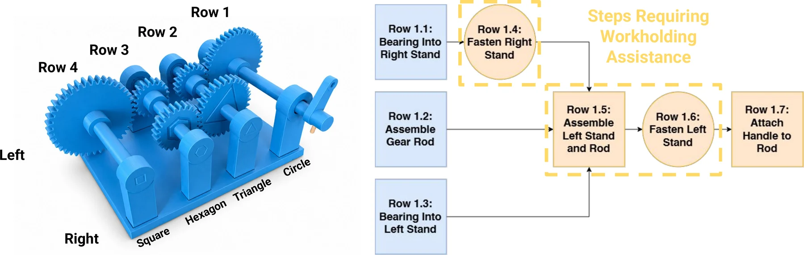
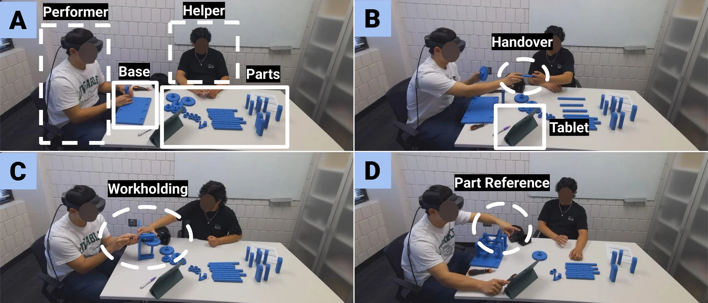
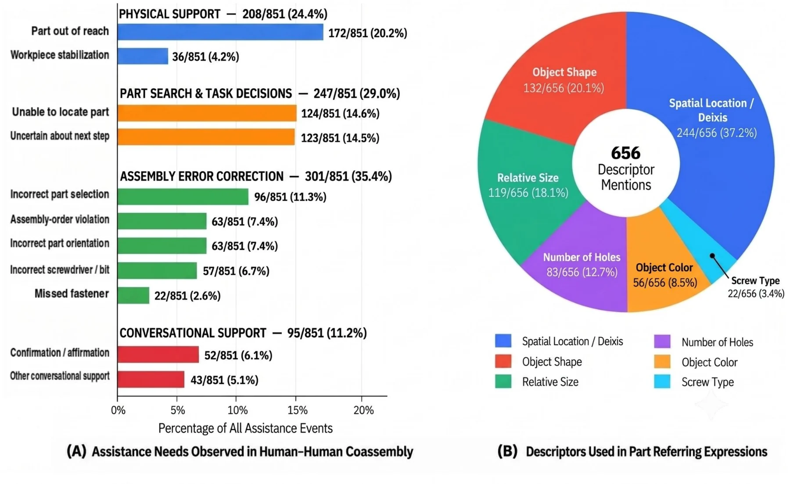
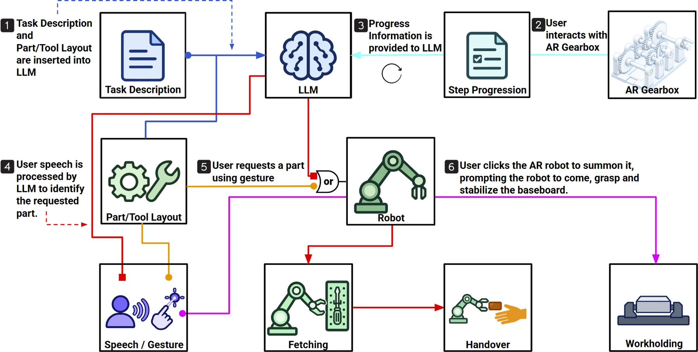
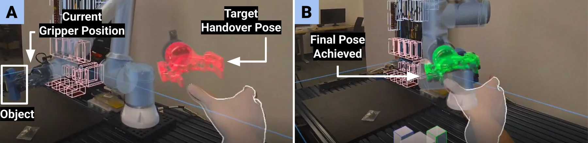
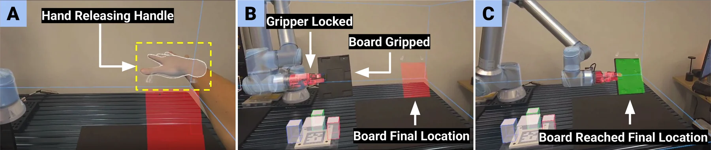
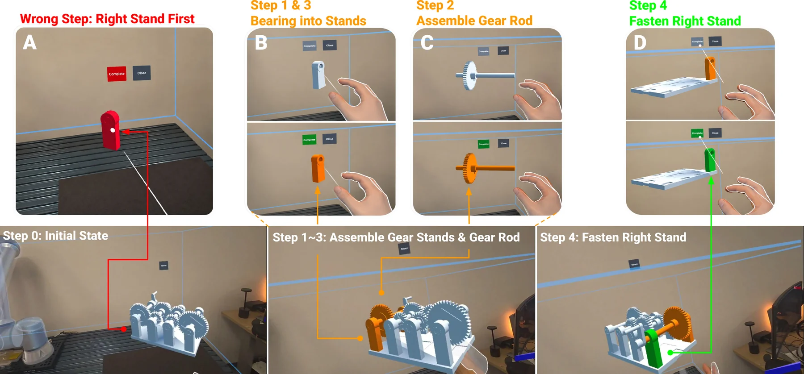

ICRA 2027 Under review
From Human–Human Collaboration to Robot Assistance in Collaborative Assembly
Which capabilities should a robot assistant have? H2H2R answers this empirically: it analyses how people help each other assemble a gearbox, derives design requirements, and builds them into an AR-mediated robot coassembly system.
- Authors
- Anonymous during review
- Topics
- Human–robot collaboration, augmented reality, language grounding, coassembly
- Status
- Under review for ICRA 2027
Motivation
The building blocks exist; which ones does a task need?
Robots can fetch, hand over, and hold parts; language models can interpret free-form requests; AR can show task state in place. Having these capabilities does not tell us which to combine for a shared physical task, or when each is needed.
We ask whether observing human–human (H2H) collaboration can supply that evidence. We analyse an existing gearbox coassembly dataset, translate the recurring assistance patterns into design requirements, and realise them in H2H2R, a human–robot (H2R) coassembly system with a UR10e arm, a pegboard of parts and tools, and a Meta Quest 3 AR interface.

H2H analysis
What human helpers actually do.
In the DYAD dataset, 20 participants assembled a four-row gearbox with a trained helper, without step-by-step instructions. Rows can be built in any order, but each row has hidden ordering constraints: fastening both gear stands first blocks the gear rod and forces rework.


We analysed 851 annotated assistance events and 656 descriptor mentions in part-referring expressions:

Design requirements
- D1 · Physical assistance (24.4% of events): fetching out-of-reach parts and tools (20.2%) and stabilising the workpiece (4.2%).
- D2 · Progress-aware assistance (29.0%): help locating parts (14.6%) and deciding the next step (14.5%), which calls for explicit task and workspace state.
- D3 · Flexible part references: people combine spatial or deictic cues (37.2%), shape (20.1%), relative size (18.1%), hole count, colour, and screw type, so requests should not need predefined names.
Error correction was the largest category (35.4%). H2H2R addresses it preventively, through an AR model of the gearbox that users can compare with the physical assembly; online error detection is future work.
System
Robot assistance tied to a shared assembly state.
A part and tool layout file and per-row task graphs define the shared state. AR interactions update which operations are active, completed, and valid next; that state grounds language requests to an LLM and drives robot retrieval, handover, and workholding. Robot motion near the user is filtered by an operational-space control-barrier-function QP that keeps clearance from the tracked hand, obstacles, and workspace bounds.

Retrieval and handover (D1)
The user names an item in free-form speech or selects it with an AR ray; the robot fetches it from the pegboard and delivers it to a pose the user sets with a hand-tracked ghost gripper.

Robot-assisted workholding (D1)
The robot grasps the baseboard when the user inserts it (a 15 N force change closes the gripper) and holds it while stands and rods are installed. The user repositions it by guiding the robot by hand (Freedrive), by moving a virtual replica with an AR handle, or by switching between the two (Hybrid).

Progress-aware AR Gearbox (D2, D3)
The AR Gearbox shows each operation’s state and blocks steps whose prerequisites are unmet. The active step lets the system answer “What should I do?” or “What parts do I need?”, and resolve underspecified requests such as “the gear rod” without naming the row.

Evaluation
Three module-level experiments.
The same 11 participants took part in all three experiments, each isolating one capability.
Experiment 1 · Free-form part references (D3)
For each of the 26 gearbox components, participants wrote a description that uniquely identified it (286 expressions), complemented by 288 authored ones. Leading open-weight models ground these reliably from text alone.
| Model | Synthetic | Participant | Total | Latency (s) |
|---|---|---|---|---|
| Qwen3-VL-8B | 98.6 | 96.2 | 97.4 | 1.02 |
| Gemma3-12B | 98.6 | 95.8 | 97.2 | 2.65 |
| Gemma4-E4B | 93.8 | 95.8 | 94.8 | 1.31 |
| Qwen3-VL-4B | 89.2 | 89.9 | 89.5 | 0.67 |
| Llama3.2-Vision-11B | 83.3 | 73.4 | 78.4 | 0.92 |
Experiment 2 · Workholding interfaces (D1)
Participants repositioned a robot-held board to eight targets with each interface. The interfaces trade off: Freedrive is fastest, while Hybrid needs the least hand travel and active interaction and was ranked first by 9 of 11 participants.
| Measure | Freedrive | AR handle | Hybrid |
|---|---|---|---|
| Completion time (s) ↓ | 10.5 ± 4.4 | 21.0 ± 5.8 | 15.5 ± 3.0 |
| Interaction time (s) ↓ | 9.3 ± 3.5 | 9.7 ± 4.3 | 5.8 ± 2.2 |
| Right-hand path (m) ↓ | 2.0 ± 0.7 | 1.5 ± 0.2 | 1.2 ± 0.2 |
| Adjustment controllability ↑ | 4.7 ± 1.0 | 5.3 ± 1.2 | 6.2 ± 0.7 |
| Preference rank ↓ | 2.6 | 2.3 | 1.2 |
Experiment 3 · Task-aware part acquisition (D2, D3)
Participants acquired parts by AR ray (Gesture), by a fully specified description (Language), or by short context-dependent requests constrained by the current assembly step (Task-Aware), such as “the gear rod” or “the other one”.
| Measure | Gesture | Language | Task-Aware |
|---|---|---|---|
| Wrong selections (%) ↓ | 19.9 ± 9.9 | 0.0 | 0.0 |
| Hand travel per step (m) ↓ | 2.86 ± 1.08 | 1.47 ± 1.25 | 1.13 ± 1.33 |
| NASA-TLX workload ↓ | 44.4 ± 26.7 | 27.5 ± 13.8 | 15.4 ± 11.4 |
| Preference rank ↓ | 2.6 | 2.5 | 1.0 |
Both language conditions grounded every request correctly. Task state helped interpret 57 of 231 Task-Aware requests (24.7%), and all 11 participants ranked Task-Aware first.
Future work
Scope and next steps.
The experiments evaluate each capability separately; they show complementary benefits but do not establish end-to-end superiority of the integrated system. Next steps:
- Clarification: ask questions and give feedback when a request matches several components.
- End-to-end evaluation: assess the integrated system on a more complex, complete assembly task.
- Online error detection: monitor assembly actions to catch errors as they happen, beyond preventive guidance.
Review note. This paper is under review, and author information is withheld until the review concludes.